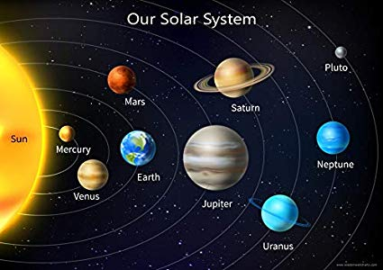

Let's explore the Planents of our Solar System
Since I am taking Introduction to Astronomy, We learn about out Planet system and the stars so, I though exploring the planets using the image map of the solar system will aid in learning more about the system. As you click on each planets, it will redirect you to an external website with more information on the planet.
